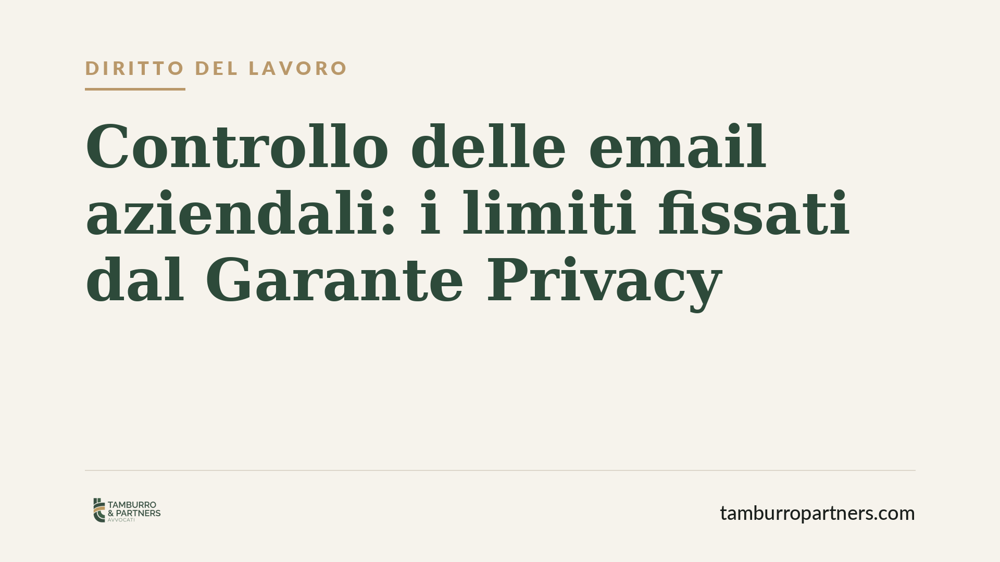

Controllo delle email aziendali: i limiti fissati dal Garante Privacy
Il Garante per la protezione dei dati personali è intervenuto contro un'azienda che monitorava in modo sistematico le email dei dipendenti. La decisione riafferma un principio chiaro: il datore di lavoro non può trasformare gli strumenti aziendali in dispositivi di sorveglianza continua. Un tema che tocca ogni impresa dotata di caselle di posta professionali e sistemi informatici.

Il fatto
Il Garante Privacy ha sanzionato un'azienda per aver controllato le email dei propri dipendenti oltre i limiti consentiti. Al centro della contestazione, un monitoraggio sistematico e prolungato della corrispondenza aziendale, condotto senza adeguata informativa e in assenza dei presupposti che legittimano un simile trattamento.
La vicenda non introduce regole nuove, ma ribadisce un orientamento consolidato: la disponibilità tecnica di uno strumento non equivale al diritto di usarlo per sorvegliare chi lavora.
Inquadramento normativo
Due livelli normativi si intrecciano. Sul piano lavoristico, l'articolo 4 dello Statuto dei lavoratori (legge 300/1970, come modificato dal Jobs Act) disciplina i controlli a distanza. Gli strumenti "utilizzati dal lavoratore per rendere la prestazione" — tra cui la casella di posta aziendale — non richiedono accordo sindacale o autorizzazione dell'Ispettorato, ma solo a condizione che il lavoratore riceva un'informativa adeguata sulle modalità d'uso e di controllo.
Sul piano della protezione dei dati, si applicano il Regolamento UE 2016/679 (GDPR) e il Codice Privacy (d.lgs. 196/2003). Rilevano in particolare i principi di liceità, minimizzazione e proporzionalità (art. 5 GDPR): il trattamento deve essere limitato a quanto strettamente necessario e non può tradursi in un monitoraggio generalizzato. La conservazione prolungata delle email e la loro lettura indiscriminata violano proprio questi principi.
Il Garante ha più volte chiarito che il contenuto della corrispondenza gode di una tutela rafforzata: leggere le email non è mai un'operazione neutra, perché incide sulla segretezza delle comunicazioni.
Cosa cambia per le aziende
La decisione conferma che il perimetro del lecito è stretto. Non è sufficiente aver consegnato un contratto o una policy generica: serve un'informativa specifica, che indichi con precisione se e come le comunicazioni possono essere controllate, per quali finalità e per quanto tempo i dati vengono conservati.
Diventa illegittimo, in particolare:
- il controllo sistematico e continuativo delle email, in assenza di un fondato sospetto o di una specifica esigenza organizzativa;
- la conservazione della corrispondenza per tempi indefiniti;
- l'accesso ai contenuti senza aver prima informato in modo trasparente i dipendenti.
Le conseguenze non sono soltanto le sanzioni amministrative del Garante, che possono raggiungere importi rilevanti. C'è anche un profilo processuale: le prove raccolte violando queste regole rischiano l'inutilizzabilità in un eventuale contenzioso, ad esempio in un giudizio di impugnazione del licenziamento fondato proprio su quelle email.
Cosa cambia per i dipendenti
Per il lavoratore, la pronuncia ribadisce che la casella aziendale non è terra di nessuno. Anche gli strumenti forniti dal datore restano soggetti a limiti di controllo. Chi ritiene di aver subito un monitoraggio non trasparente può rivolgersi al Garante o attivare gli strumenti di tutela previsti dal GDPR, incluso il diritto di accesso ai propri dati.
Cosa fare in concreto
- Verificate l'informativa. Aggiornate il documento consegnato ai dipendenti, indicando in modo esplicito modalità, finalità e tempi dei controlli sulle email e sugli strumenti informatici.
- Adottate una policy scritta sull'uso della posta aziendale e dei dispositivi, portandola effettivamente a conoscenza del personale con prova della ricezione.
- Limitate la conservazione. Definite tempi di retention proporzionati e cancellate le comunicazioni quando la finalità è esaurita.
- Escludete il monitoraggio generalizzato. Consentite l'accesso ai contenuti solo per esigenze specifiche e documentate, evitando controlli massivi e preventivi.
- Coinvolgete il DPO e un legale prima di predisporre qualsiasi sistema di verifica: valutare a monte la proporzionalità evita sanzioni e prove inutilizzabili.
Consigliamo alle imprese di trattare la revisione delle policy di controllo non come un adempimento formale, ma come uno strumento di gestione del rischio. La linea tracciata dal Garante è netta: la trasparenza verso i lavoratori è la condizione stessa della legittimità.
---
*Contributo informativo a cura di Tamburro & Partners - Avv. Giuseppe Tamburro. Non costituisce parere legale.*
Ogni storia di lavoro ha i suoi tempi.
Se gestisci HR e vuoi un confronto su contenzioso, ispezioni o licenziamenti, scrivi allo studio. Ti rispondiamo entro un giorno lavorativo.